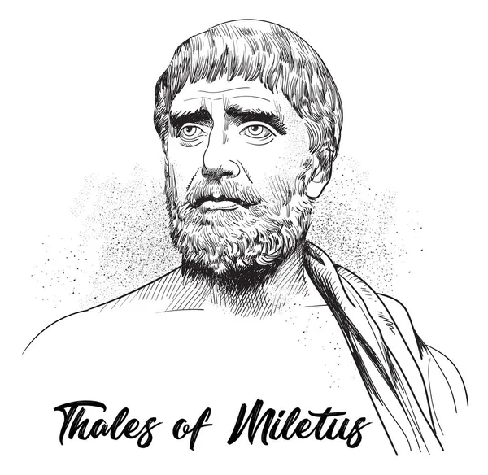
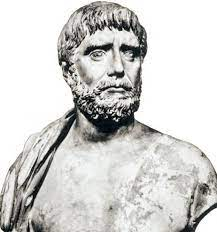

Фале́с Міле́тський

Грецький математик, астроном і філософ досократик із Мілета до Іонії, Анатолія. Він був одним із семи мудреців Греції. Багато мислителів, зокрема Арістотель, вважали його першим філософом у грецькій традиції, а в інших історичних джерелах його визнано першою людиною, яка займалася науковою філософією. Його часто називають батьком науки.
Фалес відомий тим, що відмовився від використання міфології для пояснення миру та Всесвіту натомість він пояснював природні об'єкти та явища, пропонуючи натуралістичні теорії та гіпотези. Майже всі інші досократики пішли за ним у поясненні природи, що походить із єдності всього, заснованого на існуванні єдиної кінцевої субстанції замість використання міфологічних пояснень. Арістотель вважав його засновником іонійської філософської школи та повідомив про гіпотезу Фалеса, згідно з якою першопричиною природи та матерії є єдина матеріальна субстанція: вода.

У математиці Фалес використовував геометрію для розрахунку висоти пірамід та відстані кораблів від берега. Він є першою відомою людиною, яка використала дедуктивні міркування в геометрії, вивівши чотири слідства з теореми Фалеса. Він також є першою відомою людиною, якій було приписано математичне відкриття.
Біографія
Точні роки життя Фалеса невідомі, але збереглося кілька свідчень, на які ми можемо спиратися в цьому питанні. Згідно з Геродотом, Фалес передбачив сонячне затемнення 25 травня, 585 р. до н. е.. Діоген Лаертський цитує хроніки Аполлодора Афінського, у яких сказано, що Фалес помер у віці 78 років під час 58-ї Олімпіади(548–545 до н. е.).
Відомо небагато свідчень щодо життя Фалеса, переважно вони мають характер афоризмів. Згідно зі свідченнями Геродота, Дуріса й Демокріта, він походив зі знатного фінікійського роду Фелідів, нащадків легендарних Агенора й Кадма. Батьками Фалеса були Ексамій і Клеобуліна.

Він багато подорожував, зокрема, у молодості відвідав Єгипет, де в школах Мемфіса і Фів вивчав різні науки. Повернувшись на батьківщину, заснував у Мілеті філософську школу. Вважався одним із Семи мудреців. Здобуття слави мудреця пов'язується зі знахідкою в морі золотого триніжника, який за волею оракула (або домовленістю претендентів на нього) мусив бути відданий наймудрішому і таким жителі Мілета визнали Фалеса. За іншою версією, Фалес отримав золотий кубок чи піалу з присвятою наймудрішому та передав її іншим мислителям, які повернули коштовність назад Фалесу.
Фалес жив сам і тримався осторонь державних справ. Проте, згідно переказів, він всиновив сина своєї сестри Кібіста. Він не прагнув багатства, проте з метою продемонструвати, що філософ може бути успішним у буденних справах, передбачив урожай маслин та заздалегідь викупив чавильні олії поблизу, отримавши таким чином велику вигоду від здачі їх в оренду.